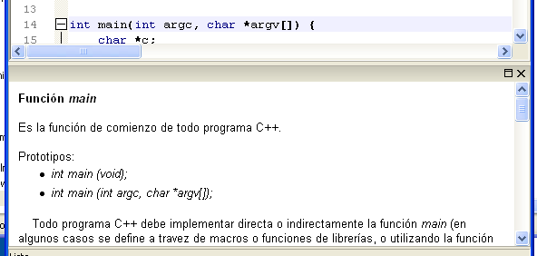

Ayuda Rápida
La carácterística de Ayuda Rápida presenta asistencia relacionada a las funciones y clases estándar y definidas por el usuario a la hora de escribir un programa. Para invocarla basta con presionar Shift+F1 o seleccionar la opción Ayuda con C++ en el menú Ayuda. Si el cursor de edición se encuentra sobre una palabra se buscará ayuda respecto a esa palabra (puede ser una función, un archivo incluido, una directiva de preprocesador, una clase, una macro, etc); si el cursor no se encuentra sobre una palabra se solicitará al usuario que ingrese la misma. El motor de ayuda buscará primero el término en cuestión en la base de datos de ayuda rápida (contiene ayuda respecto a los elementos estándar del lenguaje); si no se encuentra, se buscará a continuación si el término hace referencia a una macro, variable global, función, clase o método definido en el programa/proyecto actual (para esto debe estar actualizado el árbol de símbolos) presentando información sobre su declaración y/o definición si existe. La ayuda recuperada se muestra en el panel de ayuda rápida.

Permite además ir rápidamente a la declaración o definición de un símbolo, o abrir los ejemplos presentados en la mismas mediante los correspondientes hipervínculos.